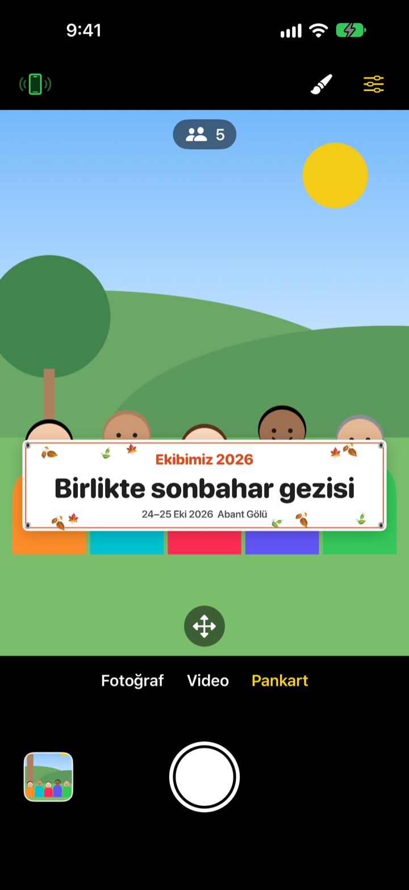
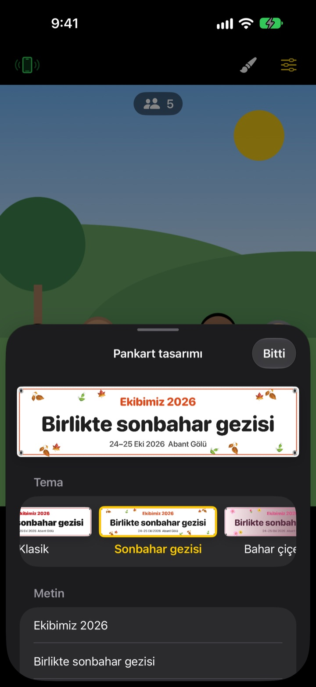

Pankartlı grup fotoğrafı.
Pankart bastırmadan.
Yazını yaz, bir tema seç, pankart grubun tam önünde dursun. Bir arkadaşının iPhone'u tek bir QR taramasıyla kumandaya dönüşür, böylece fotoğrafı çeken de karede olur.
Tüm özellikler ücretsiz. iOS 17 veya sonrası gerekir.

Bir pankart hazırla
Yazıyı değiştir ve bir temaya dokun. Deklanşöre bastığında, uygulamadaki gibi 3 saniye geri sayar ve çeker.
Tek bir fotoğraf için pankart mı bastırıyorsun?
Sipariş edersin, geziye kadar taşırsın, sonra kimse nereye koyacağını bilemez. Fotoğrafı çekecek kimse kalmadığı için de birileri hep karenin dışında kalır. ShutterLink pankartı kamera görüntüsüne yerleştirir ve bir arkadaşının iPhone'unu kumandaya çevirir; böylece herkes pankartla birlikte fotoğrafta olur.
Etkinliğine uygun pankart bir dakikada
Sonbahar gezisi, bahar çiçekleri, yılbaşı partisi, doğum günü, spor günü, mezuniyet, düğün ve şirket çalıştayı gibi 13 temadan birini seç, ardından üç satıra kadar kendi yazını ekle.
Arka planı, yazı tipini, süsleri, renkleri ve oranı değiştir, logonu ekle. Kumaş, vinil ya da kâğıt seç: Kumaş pankart gerçeği gibi sarkar, kırışır ve rüzgârda dalgalanır.

Kurulum gerektirmeyen kumanda
Sol üstteki kumanda düğmesine dokun, bir QR kodu belirsin. Arkadaşın onu Kamera uygulamasıyla tarar ve ShutterLink Remote hemen App Clip olarak açılıp bağlanır.
Kumandadaki canlı görüntüde pankart bile görünür; kadrajı ayarla ve deklanşöre bas. Her fotoğraf anında kumanda olan iPhone'a gelir, böylece uygulaması olmayan bir arkadaşın da onu hemen kaydedip paylaşabilir.
Üç adımda başla
- 1
iPhone'u yerleştir
ShutterLink'i aç ve iPhone'u bir tripoda ya da rafa koy.
- 2
Pankartı yerleştir
Alttan Pankart'ı seç, fırça düğmesiyle yazıyı ve temayı belirle, sonra grubun duracağı zemine dokun.
- 3
Elini kaldır
Avucunu kaldır ya da kumandadaki deklanşöre bas. Zamanlayıcı geri sayar ve çeker.
Grup fotoğrafları için
- Avuç içi hareketi · alkış deklanşörü
- Açık avucunu kameraya doğru kaldır ya da bir kez yüksek sesle alkışla, zamanlayıcı başlasın
- Gülümseme deklanşörü
- Herkes gözleri açık gülümsediğinde kendiliğinden çeker
- Zamanlayıcı 3 · 5 · 10 · 20 · 30 sn
- Bir ses geri sayar, flaş birlikte yanıp söner ve kumanda elinde titrer
- Herkesten kameraya bakmasını iste
- Dokunduğunda çekim yapan iPhone sesli seslenerek herkesin objektife bakmasını sağlar
- 3 · 5 kareli seri çekim
- Herkesin gözünün açık olduğu en iyi kareyi seçer. Galeride başka bir kareyle değiştirebilirsin
- Kişi sayısı · kenarlar · su terazisi
- Karedeki kişileri sayar, biri kenarda kalınca uyarır, telefon eğilince su terazisi gösterir
- 3 sn ile 1 dk arası aralıklı çekim
- Gün batımını ya da bir işin ilerleyişini düzenli aralıklarla kaydet
- Kamera kontrolleri
- Dokunarak odak ve pozlama, pozlama telafisi, flaş, ızgara, modele göre 0,5x'ten 10x'e kadar zum, ön ve arka kamera, video
- Basit mod
- Kumandada yalnızca herkesin rahatça basabileceği büyük bir deklanşör düğmesi görünür
- Ses düğmeleri · Kamera Denetimi
- Kumanda olmadan doğrudan çekim yapan iPhone'dan çek
Pankart modunda flaş, seri çekim, zum ve ön kamera kullanılamaz. Zamanlayıcı, avuç içi deklanşörü ve kumanda her zamanki gibi çalışır.
Tüm özellikler ücretsiz
Ücretsiz
- Pankart modu ve 13 tema
- Kurulum gerektirmeyen kumanda (App Clip)
- Avuç, alkış ve gülümseme deklanşörü, zamanlayıcı
- En iyi kare, kişi sayma ve su terazisi
- Video ve aralıklı çekim
Bahşiş bırak (isteğe bağlı)
- Ayarlar'dan küçük, orta veya büyük bahşiş gönderebilirsin
- Bahşiş hiçbir özelliği açmaz ya da kısıtlamaz
Abonelik değildir. Yalnızca bahşiş verdiğinde bir kez ödersin.
Reklam yok, hesap açmak gerekmez.
Sık sorulan sorular
Neye ihtiyacım var?
ShutterLink'i fotoğraf çekecek iPhone'a yükle (iOS 17 veya sonrası). Kumanda olacak iPhone'a bir şey yüklemen gerekmez, yalnızca App Clip'i ilk açarken internet gerekir. İki telefonda da Bluetooth'u açık tut ve onları yakın tut, genellikle 10 m içinde.
QR'ı tarıyorum ama App Clip açılmıyor.
Kumanda olan iPhone'un internete bağlı olduğundan emin ol. Dilersen ShutterLink Remote'a çekim yapan iPhone'daki 4 haneli kodu girip Bağlan'a da dokunabilirsin. Ayrıca App Clip'lerin Ayarlar › Ekran Süresi › İçerik ve Gizlilik Sınırlamaları'nda engellenmediğini kontrol et.
"Kamera aranıyor…" ekranında takılıyor.
ShutterLink, çekim yapan iPhone'un ekranında açık olmalı. İki telefonda da Ayarlar › Bluetooth'tan Bluetooth'un açık olduğunu kontrol et. Kod, uygulama her açıldığında değişir; uygulamayı yeniden açtıysan yeni QR'ı ya da kodu kullan ve Tekrar dene'ye dokun.
"Bluetooth izni reddedildi" yazıyor.
Ayarlar › Gizlilik ve Güvenlik › Bluetooth'tan ShutterLink'i aç. Kumanda bir App Clip olduğu için listede görünmeyebilir. Bu durumda QR'ı yeniden tara ve sorulduğunda İzin Ver'e dokun.
Canlı görüntü takılıyor veya bulanık.
Canlı görüntü, Bluetooth üzerinden gidebilmesi için bilerek küçültülür. Fotoğraflar ve videolar çekim yapan iPhone'un tam kalitesinde kaydedilir. Duvarlar, insanlar ya da mesafe takılmaya yol açabilir, ama deklanşör ve diğer kontroller çalışmaya devam eder.
Fotoğraflarım nereye gidiyor?
Çekim yapan iPhone'daki Fotoğraflar'a ve uygulamanın galerisine. Kumandaya da bir kopya gelir ama kendiliğinden kaydedilmez; kumandayı kapatmadan önce kaydet ya da paylaş. Fotoğraflar'a bir şey gelmiyorsa Ayarlar › Gizlilik ve Güvenlik › Fotoğraflar'dan ShutterLink'e izin ver.
Videolarımda ses yok.
Ayarlar › Gizlilik ve Güvenlik › Mikrofon'dan ShutterLink'i aç.
Birden fazla kumanda bağlayabilir miyim?
Evet. Birkaç iPhone aynı QR ya da kodla aynı anda bağlanabilir ve hangisinden basarsan bas aynı kamera çeker.
Çekim sırasında bağlantı kopuyor.
ShutterLink açıkken ekranın kendiliğinden kapanmasını engeller. Yan düğmeyle telefonu kilitlersen ya da başka uygulamaya geçersen bağlantı kopar; bu yüzden çekim boyunca uygulamayı ekranda tut.
Fotoğraflarım bir yere yükleniyor mu?
Hayır. İki iPhone doğrudan Bluetooth ile bağlanır; fotoğraflar ve videolar yalnızca çekim yapan iPhone'da ve bağlı kumandada kalır. Çekmeyen dağda ya da sahilde de çalışır, hesap da gerekmez.
Hâlâ çözülmedi mi ya da bir hata mı buldun? leeo@kakao.com adresine yaz. İki iPhone'un modelini ve iOS sürümünü de eklersen daha hızlı bakabiliriz.